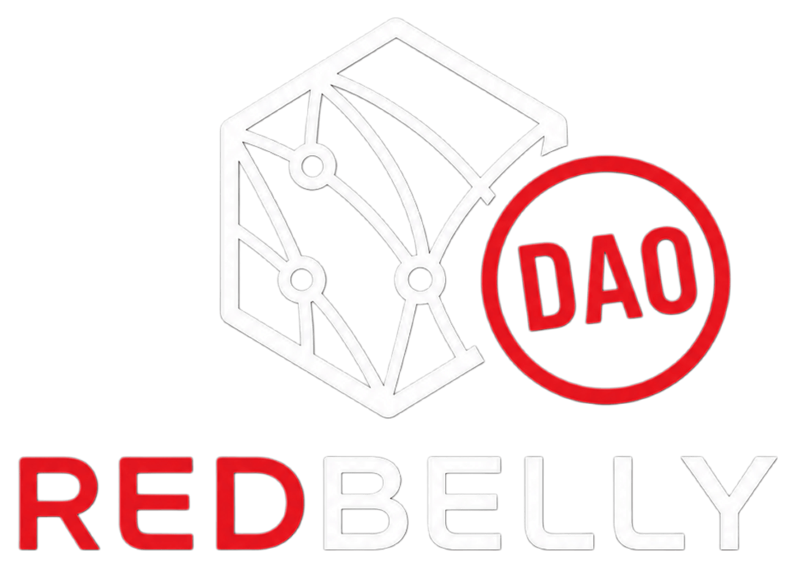

Redbelly KYC and wallet activation, in plain language
One page for the questions the community asks again and again. Find your situation, get a clear answer, and follow the steps to an activated wallet.
Do I need KYC?
KYC here means Redbelly Access, with verification by Averer. It gives your wallet permission to send transactions on Redbelly Network. Find your row.
| Your situation | Answer | Why |
|---|---|---|
| I hold RBNT on an exchange | NOT NEEDED | Redbelly KYC is for network access. The exchange has its own verification rules, which are separate. [1] |
| I hold wrapped RBNT on another chain (Ethereum, Base, Polygon, BSC and others) | NOT NEEDED | Those are other chains, not Redbelly mainnet. The access credential gives write access to Redbelly Network only. [1] [7] |
| I bridge onto Redbelly mainnet (receiving) | UNCONFIRMED | No official page says whether an unverified wallet can receive bridged RBNT. To be safe, verify and enable your wallet before you bridge. Anything you do after arrival needs it anyway. |
| I bridge off Redbelly mainnet (sending back to another chain) | NEEDED | The transaction is sent from your Redbelly wallet, so the wallet must be enabled. [1] [2] |
| I use Redbelly mainnet (send, swap, use apps) | NEEDED | Users must claim an access credential before they can self-enable write access. [1] [2] |
| I stake on Redbelly mainnet | NEEDED | Staking is a transaction on the network. Official staking is a deposit into a staking contract on Redbelly. [8] Staking on an exchange follows that exchange’s rules. |
Native vs wrapped: the one-line test
Native RBNT lives on Redbelly mainnet. Wrapped RBNT is a copy on another chain, created through a bridge such as LayerZero. If you never send a transaction on Redbelly mainnet, you do not need Redbelly KYC. [7]

Download the decision guide
The same answers as the table, as one image you can save or share. PNG works in chats and social posts. SVG stays sharp at any size.

The five common questions
1. When do I need KYC, and when don’t I?
You need KYC to send transactions on Redbelly Network. You do not need it to hold RBNT on an exchange or wrapped RBNT on another chain.
Before a wallet can write to the network, its owner claims an access credential from an accredited issuer and then self-enables the wallet. [1] [3] Averer is the issuer that verifies your identity on Redbelly Access. [5] See the Part A table for each situation.
2. How many wallets can one verified identity cover?
About 10 wallets per verified identity. DAO BRIEF
After you verify and enable your first wallet, Redbelly Access offers to add more wallets to the same identity, with no new verification. [5] The 10-wallet figure comes from the DAO brief and is unconfirmed by an official Averer or Redbelly page. [10] What happens past the limit is also unconfirmed, so ask Averer through Part D.
3. How long does approval usually take?
Unconfirmed. No official page gives a time.
No Redbelly docs page and no page on Averer’s site gives a typical approval time (checked 19 October 2026). Do not rely on a number from chat. If you are waiting and worried, see Part D.
4. Can I join from my country?
The DAO: yes, from any region. The network: not if you are in a clause 15.1 jurisdiction.
DAO. The DAO used to restrict regions. That restriction has been removed, and anyone can now join the DAO from any region. DAO BRIEF [10]
Redbelly Network. The network does not offer its services in the jurisdictions below. People who are tax residents of, or located in, those places are not allowed to use the website, platform and tools. OFFICIAL [6]
- Afghanistan
- Central African Republic
- Democratic People’s Republic of Korea
- Democratic Republic of the Congo
- Guinea-Bissau*
- Iran
- Iraq
- Lebanon
- Libya
- Myanmar
- Russia
- Somalia
- South Sudan
- Sudan
- Syria
- Ukraine
- Yemen
- Zimbabwe
*The terms spell this “Guinea-Bussau”. Check the live terms for the current list before you rely on this one.
5. Do I need KYC to stake, and why?
Yes, to stake on Redbelly mainnet itself. Exchange or app staking follows that platform’s own rules.
Redbelly’s official staking page describes node operators depositing 100,000 RBNT into a staking contract on the network, and every write to Redbelly needs an enabled wallet. [8] [1] Staking through an exchange is not a Redbelly transaction, so Redbelly KYC is not part of it. For a third-party staking app, no official page says, so treat it as unconfirmed and ask the app.
Get verified and activate a wallet
Redbelly’s onboarding overview lists the same three stages: wallet authentication, KYC verification and on-chain permission setup. [4]
Before you start
- A supported wallet app. Redbelly Access names MetaMask and Coinbase Wallet. [5]
- A valid passport. Redbelly requires a valid photo ID, verified by biometric checks. [1]
- A device that can run the identity check. Averer carries out the verification. [5]
- A little RBNT in the wallet for the enabling transaction. COMMUNITY REPORTED [11] Unconfirmed officially. Redbelly Access says the issuer covers the fees to grant access. [5]
- Open Redbelly Access. Go to access.redbelly.network. Check the address carefully. It is the official Redbelly access dApp. [1]
- Connect your wallet. Choose the wallet you want to activate. Use the address you plan to use on Redbelly mainnet. [5]
- Verify your identity with Averer. Follow the prompts and prove you hold a valid photo ID, checked with biometrics. Enter your details only on the Redbelly Access flow. [1] [5]
- Claim your access credential. Once Averer verifies you, your wallet receives the Redbelly Network Access Credential. [5]
- Enable your wallet. Self-enable write access and approve the transaction in your wallet app. The terms refer to this button as “Enable Access”. [1] [6]
- Check it worked. Reconnect the same wallet at Redbelly Access and read its account status. Then try a small transaction on Redbelly mainnet. COMMUNITY REPORTED [11]
- Add another wallet (optional). After your first wallet is enabled, Redbelly Access offers to add more accounts connected to your identity. Connect the new wallet, follow the prompts, and you do not need to verify again. The limit is about 10 wallets. [5] [10]
Screenshots. This guide has none. The flow requires a real ID check, and a screenshot of it would risk showing personal information. Wording on the live portal can change. If a button name differs from the above, follow the live screen.
Testnet is separate. After you enable your first account, Redbelly Access offers a Testnet account too. [5] Access is enabled per network, so enable on the one you use. COMMUNITY REPORTED [11]
When something goes wrong
Approval is taking too long
- Make sure you used the official site, access.redbelly.network, and the wallet you plan to use.
- Return to the portal with the same wallet to see its status.
- No official waiting time exists, so do not guess. If nothing changes, open a ticket with Averer.
My verification was rejected
Redbelly Access tells you to contact Averer for problems with identity verification. [5] Averer’s site links to a help portal for support. [9] [12] Open a ticket and say what the portal told you. No official page lists rejection reasons, so do not assume one.
I reached the wallet limit
The limit is about 10 wallets per verified identity. DAO BRIEF [10] What happens past it is unconfirmed. Pick the 10 you need most, and ask Averer if you need more.
How to open a support ticket with Averer
- Open the Averer help portal. It is the page behind Contact support in the top menu of averer.co. [12]
- Sign in, or create a portal account if it asks, then submit a ticket. The exact form fields are unconfirmed and may change, so follow the form on screen.
- Describe the problem in plain words: what you tried, what the portal said, and which public wallet address is affected.
- Never send photos of your ID, seed phrase or private keys in a ticket.
Sources
Each claim above points to a number here. Pages accessed 19 October 2026.
- OFFICIAL Accessing Redbelly Network (claim the credential, self-enable, passport and biometrics): vine.redbelly.network/identity/user-access/
- OFFICIAL Identity and participation (participants must prove identity; credential before write access): vine.redbelly.network/identity/
- OFFICIAL Accredited issuers: vine.redbelly.network/identity/accredited-issuers/
- OFFICIAL Individual onboarding overview (wallet authentication, KYC verification, on-chain permission setup): docs.redbelly.network/…/individual/overview/
- OFFICIAL Redbelly Access FAQ (MetaMask and Coinbase Wallet, Averer verifies, add more accounts, contact Averer, issuer covers fees): access.redbelly.network
- OFFICIAL Redbelly terms and conditions, clauses 15.1 and 15.2 and the “Enable Access” button: redbelly.network/terms-and-conditions
- OFFICIAL Bridged tokens via LayerZero (RBNT on Ethereum, Base, Polygon, BSC and more): vine.redbelly.network/bridged-tokens/layerzero/
- OFFICIAL Staking (a contract call on Redbelly): vine.redbelly.network/nodes/staking/
- OFFICIAL Averer (support for verifying identity on Redbelly Network): averer.co
- DAO BRIEF DAO position (regional restriction removed) and the roughly 10-wallet limit, as given in the DAO task brief. No public page retrieved. DAO platform: redbelly-governance.vercel.app
- COMMUNITY REPORTED Developer troubleshooting post (funded account needed to enable; enabled per network): dev.to post
- OFFICIAL Averer help portal (the “Contact support” link on averer.co): averer-help.freshdesk.com/support/login